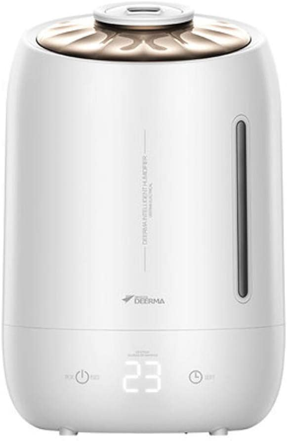
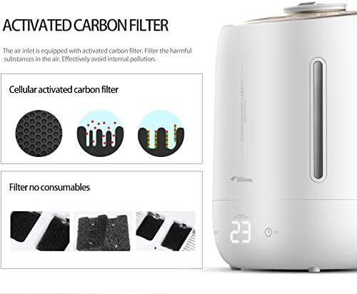
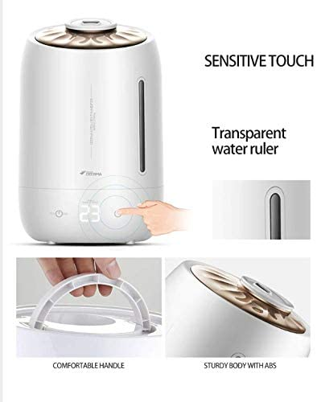
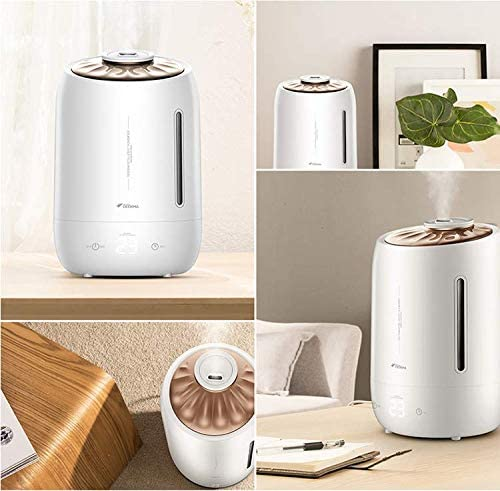
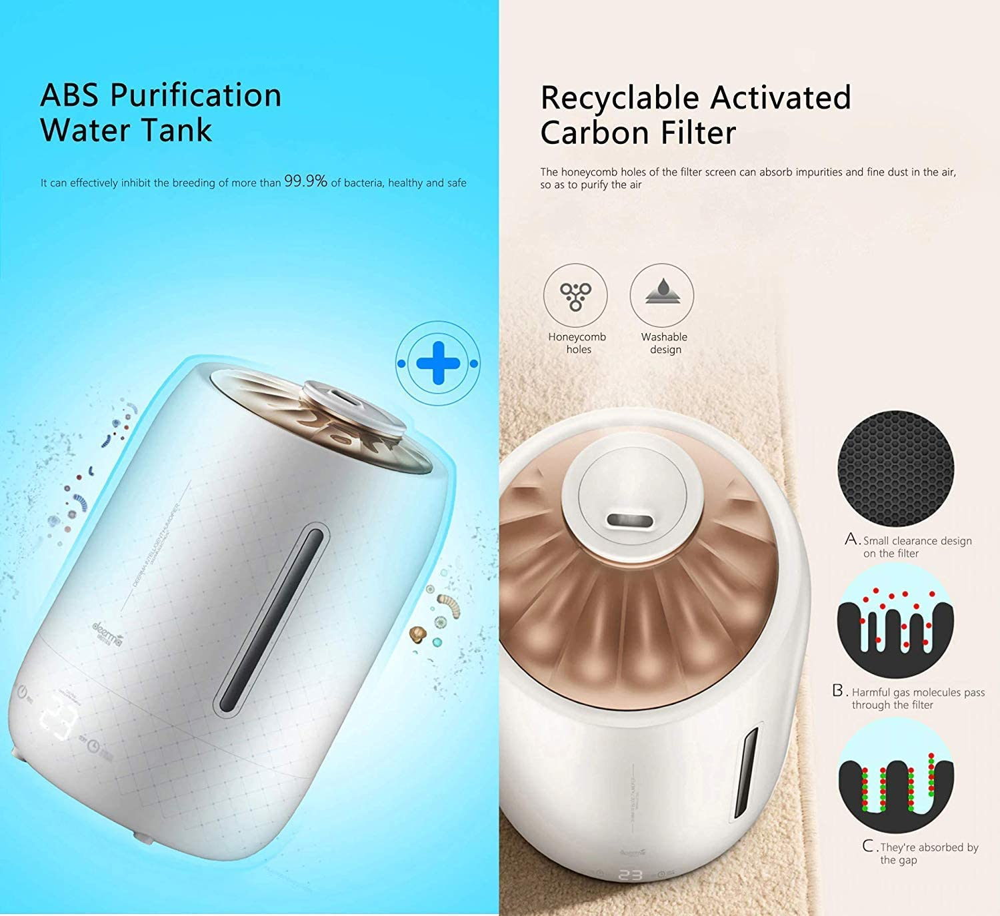
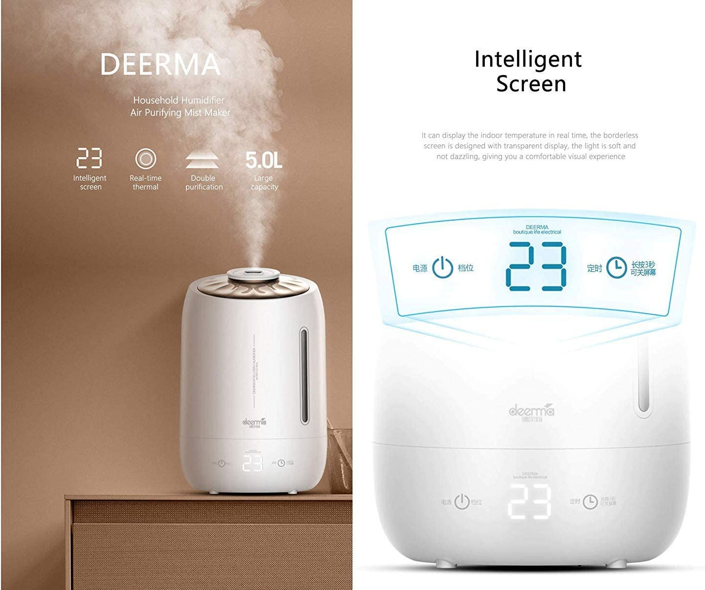

جهاز لترطيب الهواء






جهاز لترطيب الهواء بالموجات فوق الصوتية F600 من ديرما - بموزع زيوت عطرية F301، سعة 5 لتر لرطوبة دائمة تفوح بروائح ذكية للمنزل والمكت
تصميم هادئ وفعال: تقنية فائقة الهدوء وتصميم موفر للطاقة يمنحك ترطيبًا عطريًا رائعًا
تعمل أجهزة ترطيب الهواء على غمر غرفتك أو مكتبك بهواء نظيف ومنعش وتضفي متعة وفعالية على عملك وأنشطتك اليومية.
يمكن استخدامه في غرفة النوم والدراسة والمكتب وغرفة المعيشة والحمام واليوجا والسبا وغرفة الاجتماعات وغرفة الأطفال وما إلى ذلك.
يمكن استخدامه كموزع للروائح العطرية ومرطب ومنقي للهواء. كما أنه هدية مثالية
يغمرطك برائحة جميلة يمكن أن تحسن مزاجك.
to buy click here
back